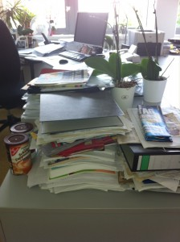
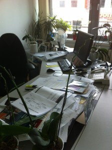

Aufgeräumt ins neue Jahr
Sind Sie nicht auch der Meinung, dass sich der Jahresanfang hervorragend eignet, um im Büro klar Schiff zu machen und somit aufgeräumt ins neue Jahr zu starten? Und noch ein schöner Effekt: Sie machen damit den ersten Schritt hin zum papierlosen Büro!
Aber denken Sie daran, bei allen Ihren Ordnungsmaßnahmen realistisch zu bleiben, d.h. Sie sollten einen verbesserten Zustand in relativ kurzer Zeit herstellen können. Lassen Sie sich nicht irritieren, wenn während des Aufräumens scheinbar noch größere Unordnung herrscht – dies ist nur ein kurzzeitiger Zwischenschritt, bei dem Sie garantiert optimierte Arbeitsabläufe entwickeln werden.
Ich rate jedem, mit dem Schreibtisch anzufangen. An diesen sogenannten dynamischen Arbeitsplatz gehören nur Dinge, die Sie für die tägliche Arbeit benötigen. Verschaffen Sie sich einen Überblick, und entscheiden Sie relativ spontan, ob zu Beginn des Jahres Ihr Monitor, die Tastatur mit Mousepad oder Ihr Laptop nicht ausreichend sind. Sehe ich da ein Stirnrunzeln bei Ihnen? Ich weiß, mein Vorschlag klingt etwas radikal, verschafft Ihnen aber einen idealen Arbeitsbeginn – nach Ihren Plänen und frei von Altlasten. Genauso sollten Sie es vor und nach längeren Abwesenheiten halten. Es ist doch wunderbar, den Schreibtisch nahezu leer zu verlassen und ebenso leer wieder vorzufinden. Sie werden die Erleichterung schnell spüren. Und bedenken Sie noch eines: Ein aufgeräumter Schreibtisch sorgt immer für ein professionelles Erscheinungsbild. Immerhin arbeiten Sie doch auch ordentlicher, als Ihr Schreibtisch aussieht, oder? 😉 Also schnell weg mit den vollen Eingangs- oder Ablagekörben und allen anderen herumliegenden Dingen.
So sollte es nie aussehen:


Ihren Einwand kann ich schon hören: „Meine Kollegen müssen mich doch vertreten können und Unterlagen bei mir finden und mir zukommen lassen.“ Dazu mein Rat: Sollte bei Ihnen noch viel mit Papier gearbeitet werden, stellen Sie bei sich ganz klassisch ein Eingangskörbchen auf. Aber: Ihre Kollegen sollten während Ihrer Abwesenheit nicht alles unsortiert dort ablegen. Es ist viel effizienter, wenn die Unterlagen bei den Kollegen verbleiben und Sie nach Ihrer Rückkehr gemeinsam eine zusammenfassende und kommentierte Übergabe durchführen. Genauso, wie Sie vor Ihrer geplanten Abwesenheit eine Übergabe gemacht haben. Klingt doch so simpel und trotzdem tun wir uns so schwer damit.
Übrigens: Im Rahmen der Arbeitsplatzhygiene gehören am Ende des Tages alle benutzten Kleinteile (Stifte, Locher, Tacker) sowie Kaffeetassen und ähnliches weggeräumt.
Folgende Vorgehensweise empfehle ich:
1. Räumen Sie Ihren Schreibtisch ganz leer.
Stellen Sie dann nur das wieder hin, was sie wirklich täglich benötigen.
2. Danach sortieren Sie die noch vorgefundenen Dokumente in drei Stapel:
- To Do
- Lesen
- Ablage
Wenn bei Ihnen Ablagekörbe noch üblich sind, können Sie übergangsweise drei dafür verwenden. Aber nicht mehr!
3. Anstehende Aufgaben sortieren Sie nach Dringlichkeit
und tragen sich diese mit Fälligkeitstermin in Ihren PC-Kalender, wie z.B. bei Outlook, ein. Stellen Sie sicher, dass Sie jeden Tag Ihren papiernen und elektronischen Posteingang einmal durchgesehen und Aufgaben erledigt bzw. einer entsprechenden Wiedervorlage zugeordnet haben.
Mein Tipp: Statt Ablagekörben oder Hängeregistern können Sie auch einen Ordner mit Zwölfer-Registern in Monate aufteilen und dort die Unterlagen für den jeweiligen Monat ablegen, bis diese erledigt sind. Von den tageweisen Wiedervorlagemappen mit 31-ger Register rate ich ab. Erfahrungsgemäß füllen sich diese sehr schnell, werden damit unhandlich und unordentlich. Außerdem
a) sind Papierdokumente schwer wieder zu finden, wenn sie nur einem Wiedervorlagetag zugeordnet werden.
b) bedeutet es viel Aufwand, wenn das Wiedervorlagedatum elektronisch erfasst und geändert wird und Sie dieses jedes Mal händisch in Ihrer Mappe umsortieren müssen.
An dieser Stelle meldet sich die Mrs. Paperless in mir: Sie möchten ja langfristig möglichst ohne Papier arbeiten. Demnach wird sich das papierne Wiedervorlagethema ohnehin bald für Sie erledigt haben. (Hinweis: Über eine professionelle Wiedervorlage mit Outlook werde ich hier noch berichten.)
4. Legen Sie Ihre Ablage beiseite und setzen Sie sich in Ihrem Kalender einen Termin für die Erledigung.
Gut geeignet ist immer die Zeit kurz vor Arbeitsende, denn diese Tätigkeit ist nicht ganz so anspruchsvoll, verschafft Ihnen aber ein gutes Gefühl, geordnet den Arbeitsplatz zu verlassen und für den nächsten Tag vorbereitet zu sein.
Ihr guter Vorsatz für Januar sollte sein: Jeden Abend den Schreibtisch aufräumen und weitestgehend leer hinterlassen!
Auch wenn es noch so banal klingen mag, rate ich Ihnen, sich abends fünf Minuten zum Schreibtisch aufräumen einzuplanen. Sie werden sehen, mit einem leeren Schreibtisch geordnet in den Tag zu starten, fühlt sich großartig an! Es ist ein wunderbares Ritual, um den Arbeitstag abzuschließen und auch gedanklich im Büro zu lassen. Und sie werden sehen, nach drei schon Wochen haben Sie sich an das Ritual gewöhnt und damit schon die erste Arbeitsgewohnheit geändert.Und selbst anfangs spöttelnde Kollegen werden eher neidisch auf Ihren ordentlichen Arbeitsplatz sein und fragen, wie Sie das immer schaffen!
Weitere Artikel

KI als Copilot für die Assistenz
KI in Form von ChatGPT & Co sind hervorragende neue Werkzeuge im Office-Alltag, um produktiver und ja, auch kreativer, zu werden. Neugier statt Angst ist angezeigt im Umgang mit diesen Werkzeugen, die wie andere Werkzeuge auch …

Digitale Tools für Zusammenarbeit im Office
E-Mail, Digitale Ablage und eine Branchensoftware sind schon lange nicht mehr genug für effiziente Zusammenarbeit. Doch bevor Sie sich in einem Dschungel an digitalen Werkzeugen verlieren, sollten Sie sich über die Systematik …